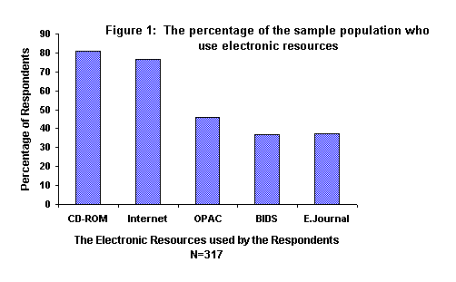
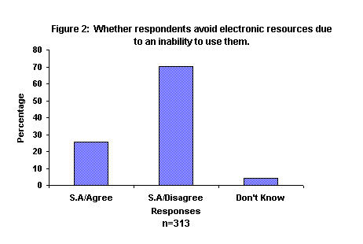
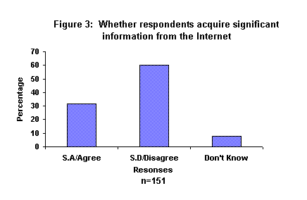
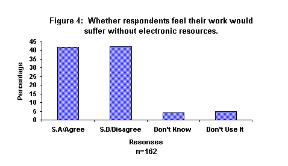

Information Research, Vol. 4 No. 2, October 1998


Information Research, Vol. 4 No. 2, October 1998 | ||||
|
|
|||
Students are increasingly expected to use electronic resources while at university. Studies were undertaken to determine the level of use of this type of resource, how students feel about various issues surrounding electronic resources and whether attitudes change dependent upon subject studied. 317 students across three universities completed questionnaires to determine level of useof various electronic information resources; ways in which theyfelt electronic resources had hindered or improved their academiccareer; if they perceived themselves capable of using the resources; would the standard of their work suffer without the use of these resources; and the various methods employed to acquire the skills necessary to use the sources. 155 students were questioned as part of a larger study IMPEL2, investigating the Impact on People of Electronic Libraries, supplemented by 162 students, questioned as part of an MA Dissertation, using the same methodology.
This latter change, the increase in the amount of electronic information sources available, has been significant within LIS. It is costly, results in a demand for information skills training for both staff and students and is causing a radical transformation within LIS, involving a shift from an original emphasis upon holding material towards the importance of being a gateway to networked information, providing access rather than holdings.
Students constitute one part of society who are fortunate to have access, at no cost to themselves, to a variety of electronic information resources. Universities use considerable proportions of their budgets to provide this technology for their students to assist in the learning process. How do students themselves feel about the availability of electronic information, which may require the acquisition of new skills to utilise effectively? Little is known about student attitudes towards this form of information provision and without a better understanding, it is difficult for service providers to know if they are meeting the needs of students effectively.
This paper aims to contribute to the limited information on students' views of electronic information resources.
The availability of the Joint Academic Network (JANET) provides free access at the point of use to the Internet as well as to a number of information services supported by the Joint Information Systems Committee (JISC), for students and staff members within United Kingdom academic institutions. These information services include Mailbase, offering an information sharing service; Bulletin Board for Libraries (BUBL), providing a description of Internet resources and a current awareness service; National Information Services (NISS) which provides a focal point to the United Kingdom research committees to enable them to access information resources world-wide, and UKOLN, the UK Office of Library Networking, oncerned with the use of networks by the library community. Dependant upon individual university subscriptions, students have a number of on-line databases available to them. These include BIDS, EDINA and OCLC FirstSearch, all of which provide references to journal articles for registered users. Via JANET, users can also access the OPACs of many United Kingdom University libraries as well as several specialist collections. JANET is being replaced by SuperJANET, which has a network capacity 1000 times faster than JANET. In conjunction with these technological advances, many stand alone CD-ROMs, which have been in operation for the last decade, are being increasingly networked, providing access from any networked computer terminal in the institution not solely within the library itself, hence improving user accessibility.
Electronic information sources offer today's students different opportunities from their predecessors. Brophy (1993) details the advantages of networking for the user as being: the information needed can be delivered from the most appropriate source to the user; the user can re-specify his or her needs dynamically; the information is obtained when it is wanted, so becomes "just in time" rather than "just in case"; the user selects only the information needed to answer the specific question and, finally, the information is only stored should the user wish. Electronic information can therefore provide a number of advantages over traditional print based sources.
These advantages include the fact that electronic information sources are often faster than consulting print indexes, especially when searching retrospectively, and they are more straight forward when wishing to use combinations of keywords. They open up the possibility of searching multiple files at one time, a feat accomplished more easily than when using printed equivalents. Electronic resources can be printed and searches saved to be repeated at a later date; they are updated more often than printed tools. One main advantage, especially to distance learners or those with limited time to access the library, is their availability from outside the library by dial-up access.
In order to utilise the growing range of electronic resources, students must acquire and practice the skills necessary to exploit them. "For students using a variety of on-line databases, it is as though they were parking lot attendants, where every vehicle is not only a different make and model but has a different configuration" (Blandy & Libutti, 1995: 291). As Dutton (1990) suggests, the skills required to maximise the potential of electronic resources are much greater than those required for searching printed sources. These skills include a knowledge of the structure of the database and the instructions which must be input into the computer by the searcher, as well as an understanding of the ways in which the instructions are linked with one another. To this end, Brophy (1993) states users do not often appreciate the skills required to search these sources, stating they are deceptively easy to use.
The ability to find and retrieve information effectively is a transferable skill useful for future life as well as enabling the positive and successful use of the electronic resources whilst at university. As Brophy argues, libraries must "reach a position where the acquisition of information skills is acknowledged as one of the key learning objectives for every student entering a university, so that no student leaves without being fully equipped to cope with the information intensive world - the information society - as an end-user" (Brophy, 1993: 55)
There is a noticeable gap in the literature about student perceptions towards electronic information, as Brittain noted, "most user studies have looked at the situation through the eyes of the information professionals, rather than the user" (Bawden, 1990: 41). A number of surveys do exist, in the main relating to the use of CD-ROM, but are significantly lacking considering the amount of technology available. The views of users should be a vital form of analysis into the effectiveness of these sources, as well as enabling the varying needs of students to be met, and monitored. "While user surveys can never tell the whole story of how patrons are responding to a library service, they can provide valuable ideas about what does and does not work" (Faries, 1992: 147). It is only under these circumstances that effective responses can be made to deal with any possible user reactions, either positive or negative.
Results generated from four of the studies undertaken are detailed below, although they relate solely to the use of CD-ROMs and were undertaken during the 1980s. Regardless of this, the results are interesting and essentially useful to bear in mind when discussing the varying opinions held by the sample population providing data for this paper.
General user opinion towards the use of electronic resources, in particular CD-ROM, has been positive, with students enjoying using these sources and finding relatively few problems while using them. Surveys undertaken at Oakland University (Schultz & Salomon, 1990) into student satisfaction with CD-ROMs discovered that:
Similarly, Beecham Pharmaceuticals' Research Division (Goldfinch, 1990 ) produced a survey regarding end user searching of CD-ROM and results showed:
Allen (1989) looked at a number of studies undertaken to analyse patron response to using bibliographic databases on CD-ROM in academic libraries and found that:-
The issue of users' opinions of satisfactory results must be approached with care, as satisfactory may have a different connotation in the mind of the student than the mind of an information professional. For instance, a number of questionnaires were distributed to end users at Hofstra University (Day et al., 1996) with the result that a high percentage of respondents were satisfied with the outcome of their searching. However, the librarians were concerned students were interested in high recall rather than high precision. Similarly, Culbertson found in a study of students using science and engineering CD-ROM databases that although end-users could obtain and print results, few used refining techniques (Culbertson, 1992).
Finally, a survey was undertaken by Biddiscombe (1996) to provide an international snapshot of the use of networks by academic library users. Comments included:
Of those surveyed, 79% were happy with the results produced.
Clearly, the views from users of electronic resources are favourable and provide some justification for the financial investment in installing and maintaining these systems in academic libraries.
Data collected by the IMPEL2 team in 1996-97 via interviews and focus groups with library, academic, computing and related support staff, provides evidence about how these members of staff perceive the emerging relationship between electronic information resources and students. This complements data collected via the two questionnaires.
There is a growing divide between the capabilities of students entering higher education in their use of electronic information resources.
"You have the people that rush up on day one....saying where's e-mail, BIDS, e-journals...and then you have the people...saying I don't know anything about this". (Assistant Librarian)
This highlights the pressure exerted upon LIS and academic staff. Information skills training, aimed at the whole university needs to take into account the varying abilities of the students.
Students entering higher education appear to have raised expectations about the capabilities of electronic resources.
"In some cases they seem to think that there is a button they can press and it will write an essay for them...so to the students it is a big disappointment" (Senior Library Assistant).
This denotes a lack of awareness of the full potential and function of electronic resources. Today's students may be more sophisticated than their predecessors in using some of the basic functions of many systems, however many are clearly unaware of the limitations and uses of many electronic sources of information.
There appears to be an emerging over reliance upon electronic information resources at the expense of the more traditional forms of information.
"students will say to me.. they don't want books, they just want it up on the screen...and if they can't get it up on the screen they are not interested". (Senior Library Assistant)
In view of the debate over access rather than holdings, this attitude amongst students may seem encouraging. However, the importance of print-based information must not be dismissed and it is essential for students to be aware that electronic resources and print-based resources complement each other.
The rationale behind this study lay in two separate, but closely related projects: the IMPEL2 Project and an MA Information and Library Management Dissertation which focused upon student attitudes towards electronic information at one United Kingdom University (Ray, 1997).
IMPEL2 (Impact on People of Electronic Libraries) a JISC-funded Electronic Libraries Programme (eLib) Project based at the University of Northumbria (Day et al., 1996), monitored organisational, cultural and human aspects of electronic library development. Specifically, the study focused upon the impacts of the electronic library on qualified LIS staff and related support staff, academic staff and students. It examined the impacts on LIS of Resource Based Learning and studied the implications for staff training and development. Research for this project was undertaken at 24 institutions and provided a vast array of qualitative and quantitative data.
Within the IMPEL study, 155 questionnaires were collected from students at two universities about their attitudes towards electronic information resources. The students were studying the following courses: Pharmacy, Business Administration; Law; Transport Management and Logistics and Marine Geography. One university (Case Study A) was situated on a single, compact, inner city campus with only a small number of students (5,100) and acquired University status in 1966. This University had several PC labs offering 24 hour access, offered orientation tours to new students, had extensive printed guides to assist students with retrieval skills and had an Information Technology Training Series placed on the Internet for users. The second university (Case Study B) was a major civic university dating back to 1883 and consisting of approximately 14,000 students. This university had just acquired funding to create teaching suites within four libraries. Analysis of this student data is discussed in this paper.
This data was validated by a study of 162 students at a single institution, undertaken across a range of subject areas, using the same methodology as the IMPEL student survey. This university (Case Study C) was awarded University status in 1992 and has over 15,000 students. It offers an Information Skills module (Level 1) to all students which is accredited to a student's course and all students are provided with an induction work book to provide 'hands-on' experience of the basic library services.
As expected, a wide variety of views were expressed by the sample population, but the main findings suggest that although many respondents do use some electronic resources, only a limited number were being used. In order to determine whether degree choice influences attitudes towards electronic resources, respondents were categorised depending upon subject studied. Where results from these groups deviated significantly from the sample population results this will be highlighted.
Question: Do you have access to a networked computer at university or at home?
91% of respondents acknowledged access to a networked computer via university, a figure which was expected. Also, 17 students (5.4%) acknowledged access at home as well as the university. Although a relatively low percentage of students, this figure should increase over the next few years, paralleling the growing popularity of electronic resources and the slowly decreasing cost of purchasing equipment. The International Data Corporation state "more Internet access is from work (or university or college) than from home, but this is estimated to be evened out by the year 2000" (Winship, 1996: 6). Eight respondents (2.5%) failed to indicate access to a networked computer via any means. Allowing for a number of these respondents failing to answer the question, this does pose some concern over whether some of the respondents did not understand the terminology of "network".
Question: Which electronic resources do you use?

As expected the most popular electronic resources were CD-ROMs and the Internet, with 80.7% and 76.7% respectively of the sample population using them. As many Schools and College of Further Education invest in the Internet and a range of CD-ROMs, many students are provided with the opportunity to use these resources prior to entering higher education, which may improve their popularity.
Use of BIDS was very low across the whole sample (36.8%) apart from the Pharmacy undergraduates from Case Studies A and B where usage was very high (98.6%). This resource seems unlikely to attract technology novices, as more information retrieval skills are required to access any relevant information than are necessary to use the Internet or CD-ROM.
37.5% of the sample population used electronic journals as an information retrieval tool, a low number, although with the increase in the number of journals which are published electronically, this figure is likely to increase.
Only 46% of respondents claimed to use OPACs, a figure which is difficult to accept. The author believes many of the respondents were unaware that "OPAC" denotes On-line Public Access Catalogue and had this have been made clearer, a larger number of the students would have admitted to using it as a source.
In short, the popularity of the electronic resources specified falls in the main to the Internet and CD-ROM. As regards the other resources, they are accessed by students in some subject groups more than others, but this is not done by many of the sample population.
Question:Question: Please list three ways in which access to electronic resources has hindered your academic career.
This question was included in the questionnaire distributed to students at Case Studies A and B and the percentages have been calculated from the total number of responses (171), rather than the total number of possible responses (465).
| Response | Percentage |
|---|---|
| Too much information retrieved | 10.5 |
| Time consuming | 16.4 |
| Limited access to a computer terminal | 10.5 |
| Lack of IT knowledge to effectively utilise the services | 11.1 |
| Using electronic resources often detracts from doing work | 13.5 |
Limited time and lack of effective information retrieval skills seem to be the main barrier to using electronic resources. With effective information retrieval skills and a knowledge of the most useful databases to search for a specific query, a smaller amount of information is often retrieved, and the time spent searching databases reduced. However, with more effective search engines and user-friendly interfaces, in-depth information retrieval skills would not be as essential and therefore the time spent using the source would also be reduced.
10.5% of the respondents stated that limited access to a computer terminal hindered their academic career. Despite a number of computer centres opening for 24 hours, and booking systems to ensure equality of access, students still appear to experience difficulties locating a terminal. This is likely to improve over the next few years in response to one of the Dearing Report Recommendations "that by 2000/2001 higher education institutions should ensure that all students have open access to a networked desktop computer and expect that by 2005/2006 all students will be required to have access to their own portable computer" (National Committee of Inquiry..., 1997: 48).
A number of comments on the questionnaire distributed to students at Case Study C highlighted concern as regards having limited information retrieval skills. This has led to a number of students relying upon the printed material they are familiar with, instead of trying to use the new resources. The following comment epitomises the majority:
"I much prefer to use printed resources because I am in charge of using them. I can turn the pages and use the indexes properly and manually without worrying about wasting valuable time"
Question: Please list three ways in which electronic information resources have improved your academic career
Only Case Study A and B students were asked this question, and percentages have been calculated using the total number of responses (271), rather than the total number of possible responses (465).
| Response | Percentage |
|---|---|
| Access to current up-to-date information | 9.9 |
| Easier access to information | 19.2 |
| Faster access to information | 22.1 |
| Access to a wider range of information | 25.1 |
22.1% of the respondents who answered stated faster access to information as a benefit of using electronic resources, yet 16.4% stated it was time consuming to use. Similarly, while 25.1% of respondents found access to a wider range of information an advantage, 10.5% found it a disadvantage. This suggests students are, on the whole, confused about the potential benefits of electronic resources.
Question: "I tend to avoid using electronic sources as I cannot effectively utilise the services offered"

The majority of respondents disagreed with this statement suggesting a perceived ability on behalf of 70.3% of the respondents to effectively utilise the services offered. Although this suggests an emerging student population equipped with very effective information retrieval skills, it does not provide analysis of which electronic resources the students use. As a previous question highlighted, in the main, the Internet and CD-ROMs are popular resources, so students are likely to have responded to this question using a minimum of electronic resources. Conversely, students may feel the real reason for avoiding using electronic resources to be due to a lack of computer availability rather than an ability to utilise the services.
One-quarter of the respondents agreed with the statement, a significant percentage admitting to avoiding the use of electronic resources because of a lack of relevant skills. In light of the emerging emphasis upon electronic resources within higher education, it is vital that these students acquire relevant skills so they do not end up 'left behind' in an ever prevalent information society.
Respondents, in the main, perceived themselves to be confident and able users of electronic resources. Biddiscombe (Biddiscombe, 1996 ) discovered from his international survey of academic library networked services, that 69% of respondents were generally satisfied with results obtained from database searching. However, as mentioned previously, one must be aware that the views of the students may not reflect the views of an information professional. Ankeny stated from a study undertaken on 600 untrained end-users, "in many cases high levels of reported end-user 'satisfaction' with computerised services may not reflect true success rates" (Ankeny, 1991: 356). This is an issue which poses some concern for information professionals for as long as the student perceives themselves to be happy with their search results, the need to refine search terms, or use alternative sources may not emerge.
Question: "I have been unable to acquire any significant information from the Internet"

Nearly one-third of the respondents from Case Studies A and B agreed with the statement. More research is required to determine whether this is due to a lack of information retrieval skills on the part of the student, or the problems associated with the lack of organisation of information on the Internet. A number of comments from the respondents confirms the latter view, as many stated they would rather not use the Internet as it is too slow, has ineffective search engines and is difficult to use. Seemingly, if search engines were made more effective and information was organised in an appropriate manner, greater satisfaction as regards information retrieved might occur.
Conversely, students may indeed lack the relevant information retrieval skills to use the Internet, hence resulting in find nothing of any significance from that source. One academic lecturer interviewed by the IMPEL team had been working in Canada at the time when Internet access became available to students and commented that:
"the quality of the essays written by the students went dramatically down, they didn't know how to handle it and they didn't have the background knowledge to really evaluate the information available on a certain Internet source"
More positively, 60.3% of respondents felt they had acquired significant information from the Internet, with no distinction between information of an academic nature or information for extra-curricular interests.
Question: Do you feel that the standard of your work would suffer without electronic resources?

This chart clearly highlights the growing importance of electronic resources in higher education. 42% of respondents declared that their work would suffer without the use of electronic resources, although a similar number have yet to be convinced. Although one question presented to the respondent showed only 14% referred more to electronic resources than printed resources, this question highlights that many, although perhaps placing greater emphasis upon printed material, also utilise electronic resources for academic work.
Question: How have you learned to use electronic resources?
| Response | Percentage |
|---|---|
| Trial and error | 78.7 |
| Guidance from other students | 78.7 |
| Guidance from Library staff | 54.2 |
| Self taught | 49.0 |
| Courses offered by University or College | 37.4 |
| Guidance from Lecturers | 25.8 |
| Guidance from computing Staff | 23.9 |
| External courses | 6.5 |
| Guidance from Technicians | 5.8 |
The table shows responses from students at Case Studies A and B. The most popular method of acquiring the necessary skills to use electronic resources was via Trial and Error (78.7%) and guidance from other students (78.7%). More than half of the respondents (54.2%) also received guidance from library staff, but it seems most respondents approach the learning process as individuals or with their peers. Students from Case Study C were asked this question in relation to specific electronic resources. Responses reflect those from Case Studies A and B, where the most popular method for learning to use the resources was self taught and guidance from other students. 68% of respondents used this method to use the Internet, while 66% did for using CD-ROMs.
With the number of students entering higher education increasing and the number of staff not rising accordingly, the possibility of ensuring students have acquired the correct skills if they do not attend sessions or seek guidance is essentially very difficult to monitor.
Long experience of user education programmes has shown that teaching information retrieval skills to students should be embedded into the curriculum and done at a time when the user can understand its appropriateness. This training should also be adapted to the varying abilities of the users which, as this survey has demonstrated, is vast. If students are aware that the skills required for using electronic resources are not insular, and indeed provide them with valuable transferable lifelong skills, skills which employers will be looking for, they may be more likely to learn how to use them.
Encouragement via academic staff can only serve to promote the usefulness of electronic resources to students. As one academic member of staff interviewed by the IMPEL team commented, many students, when looking for information:
" think what's on the reading list, I'm following the course"
Therefore, if academic staff were to promote electronic resources, with references for students to locate, this may increase the number of students acquiring the necessary information retrieval skills. Clearly this depends upon academic staff having the ability to do this. IMPEL data suggested that many academic staff seem reluctant to use electronic sources, one of the main reasons for this being that they are unaware of what is available to them and what the services are capable of doing. Indeed, only 25.8% of students from Case Studies A and B admitted to having acquired the skills to use electronic resources via guidance offered from lecturers. This may provide an explanation for the difference in attitudes of students in different subject groups, as if academic staff, confident and in favour of electronic resources are concentrated into a small number of departments, by promoting the advantages of using technology to their students, a difference across the student population as regards information retrieval skills will emerge. If students are not encouraged to use electronic resources by their tutors, and information skills training occurs outside of the curriculum, students will be less likely to make use of electronic resources for academic purposes.
The findings of this small sample population suggest many respondents do use some electronic resources and are aware of their benefits, but the majority still like to use printed material to complement this technology.
Results from this study are encouraging and as with previous studies undertaken highlight many students who do use these electronic resources and are confident in doing so. However, it is also apparent that a large number of students from the sample population are leaving University without the necessary transferable skills to cope in an information based society. Further research is necessary to show how best to encourage students to make effective use of the electronic sources that are available. Views of LIS staff interviewed in the IMPEL project together with these findings from students suggest the following approaches may support student use:
How to cite this paper:
Ray, Kathryn & Day, Joan (1998) "Student attitudes towards electronic information resources." Information Research, 4(2) Available at: http://informationr.net/ir/4-2/paper54.html
© the authors, 1998. Last updated: 14th October 1998